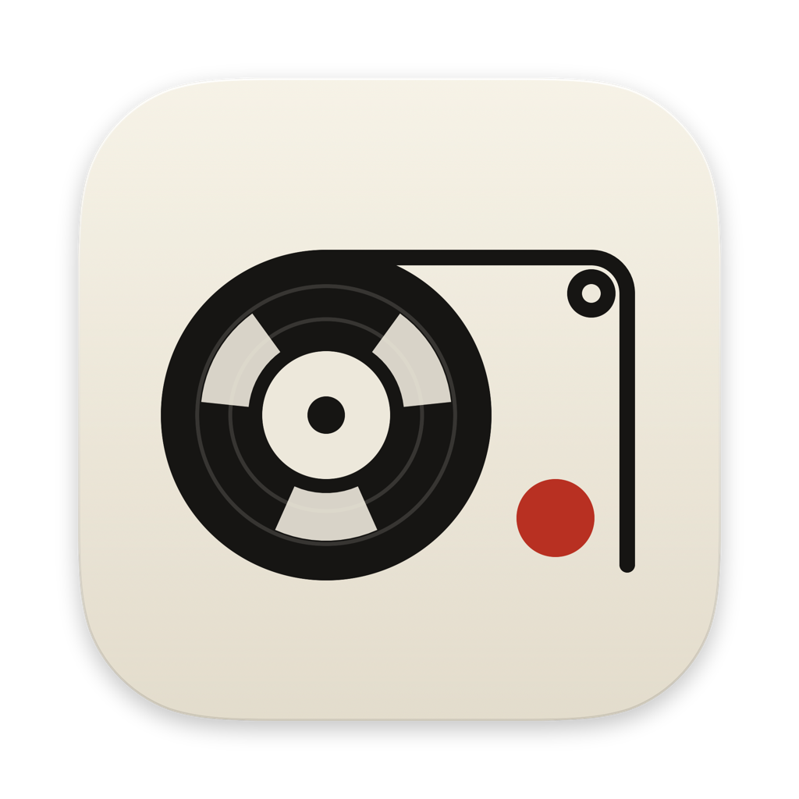
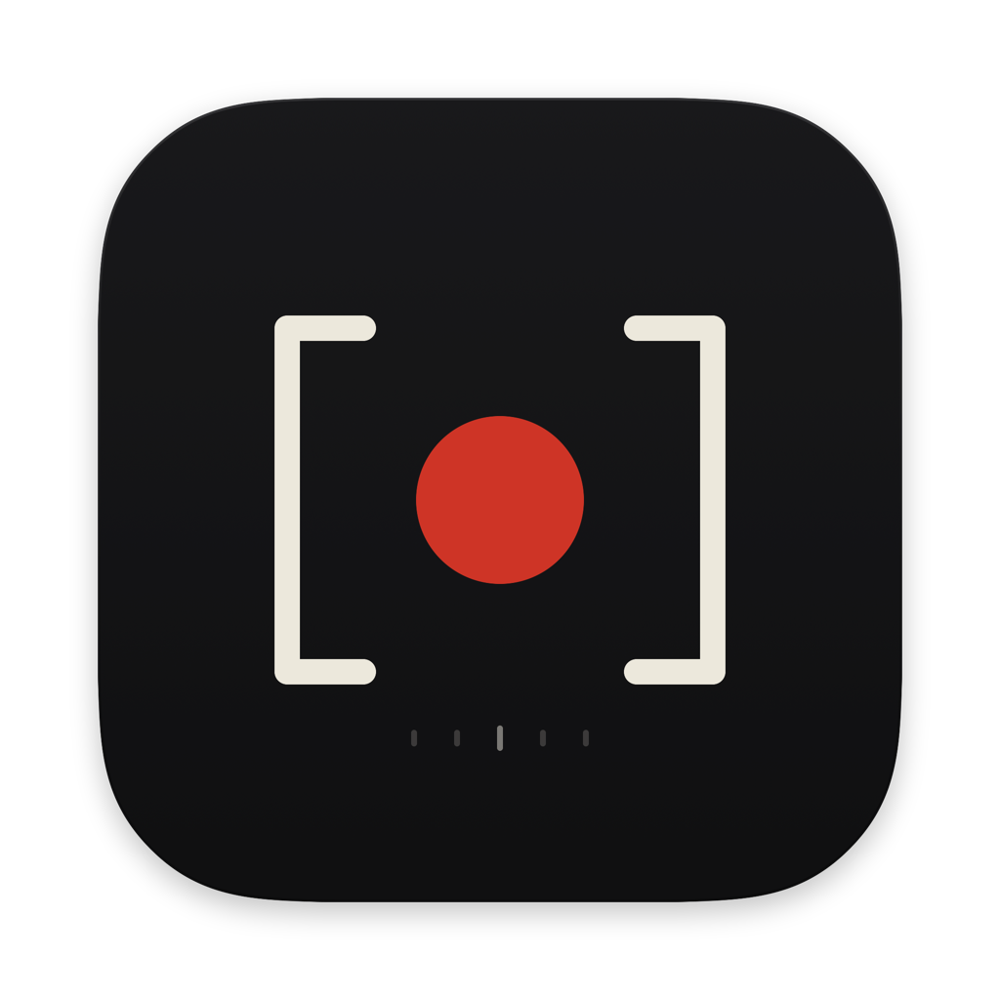
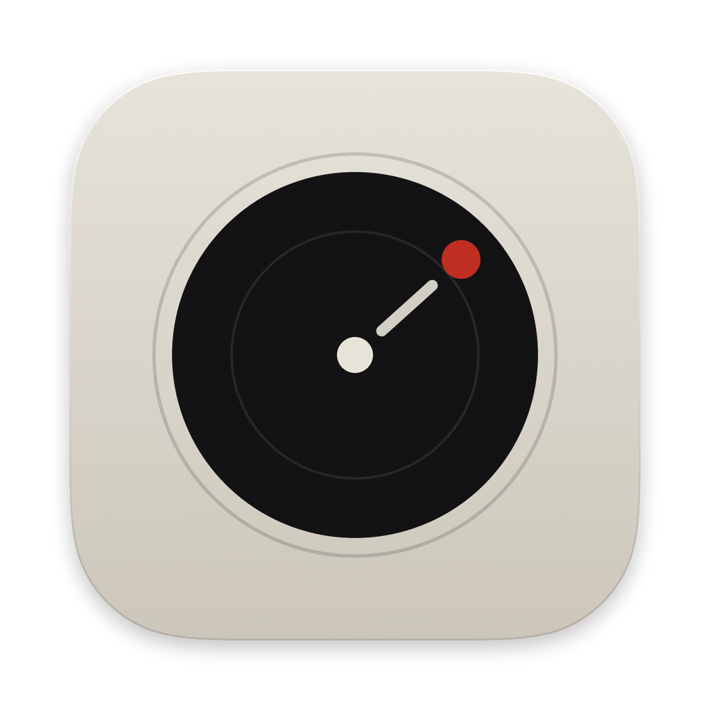

LongTake · 图标与视觉母题预览台
原生 SwiftUI Continuous Squircle 矢量超采样渲染 · 零锯齿与零外白圈 · 点击卡片切换尺寸阶梯与程序坞预览
暖纸浅色
暗房深色

OPTION 01 · 当前已实装
母带走带 · Braun Offset Reel
致敬博朗 TP 1 与 Nagra 开盘机。不对称偏心供带轮绷紧走带绕过导轮，右下角静置一枚朱砂信号点，杜绝对称双轮的「人脸错觉」。

OPTION 02 · 影像暗房
暗房取景 · Obsidian Gate
35mm 电影胶片片门取景框包络一枚饱满朱砂录音核，底置五道微米级时间标尺，契合深色专业剪辑与编码桌面。

OPTION 03 · 纸墨版画
一镜声轨 · Editorial Track
承袭 Mono-color 档案纸墨语言：五道垂直胶片光学声轨柱配右侧朱砂定音圆印，80% 炭墨与 20% 朱砂张力平衡。

OPTION 04 · 随身机械
定音刻盘 · Field Platter
借鉴 TP-7 随身母带机指尖惯性转盘：拉丝暖铝底盘嵌消光黑转盘，42° 指针直指外圈朱砂录音点，16px 下依然锐利。
128px
64px
32px
16px
macOS 程序坞邻近比例模拟
一键切换实装指令：
swift scripts/render_icons.swift --install 1